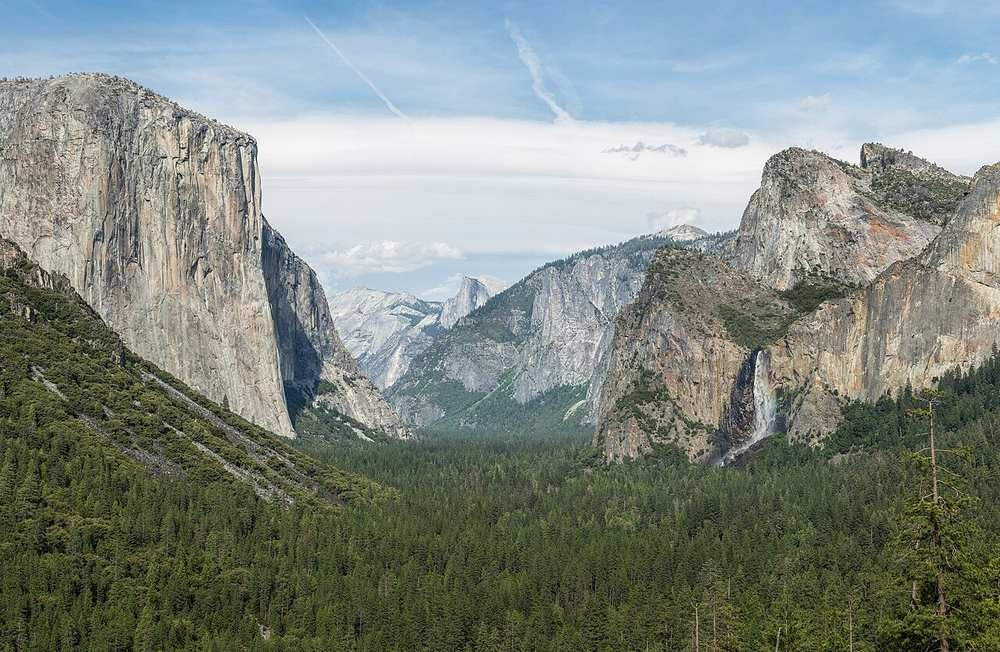
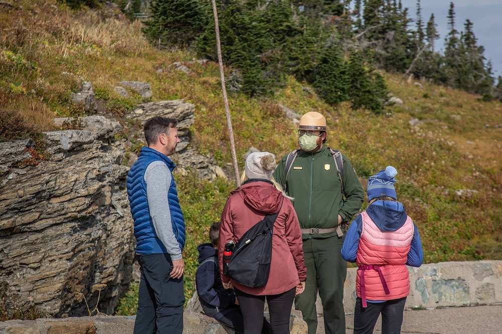
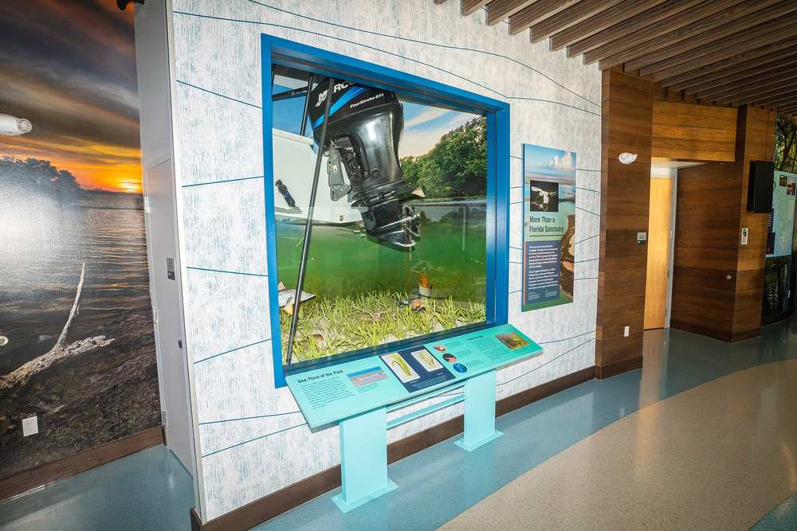
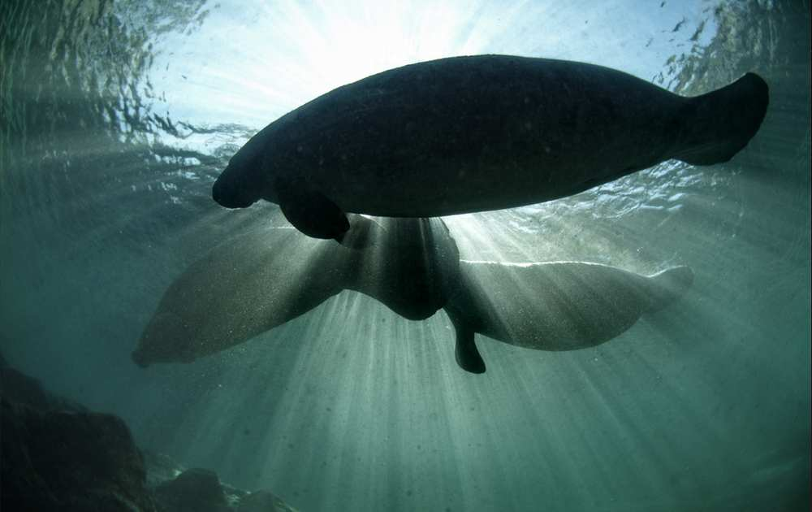
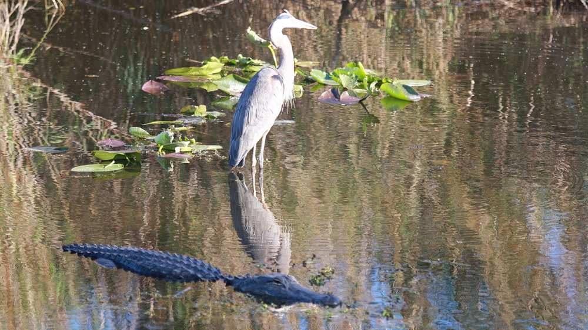
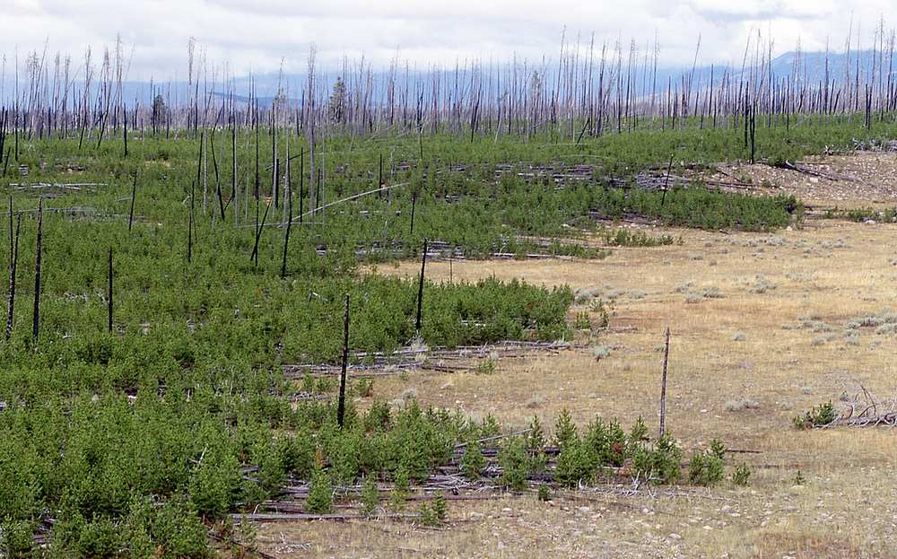
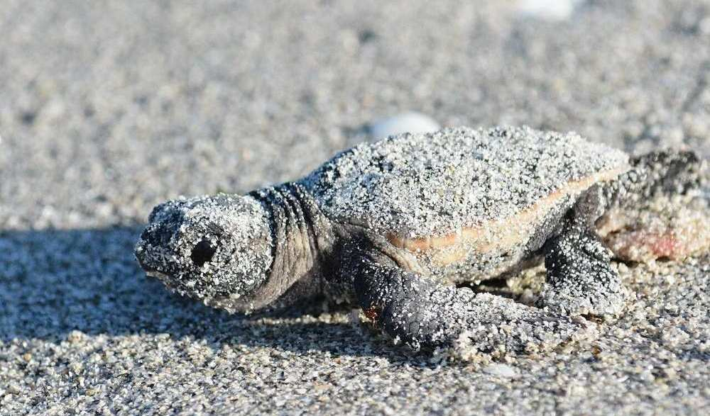
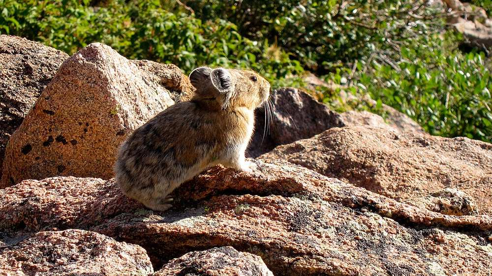

Unit 11 Family Guide: National Park Capstone
Opti's Wonder Films · Lessons 32.01 to 33.02 · Weeks 32 to 33 · Season Finale

Researching a National Park Ecosystem



The film's big questionHow do scientists figure out which organisms belong in a habitat, and why does protecting that habitat matter?
What your child learns
- Every national park is an ecosystem: living organisms plus nonliving conditions like water, temperature, and sunlight, all working together.
- In any habitat, some organisms survive well, some survive less well, and some cannot survive at all. Conditions decide who lives where.
- When wolves came back to Yellowstone, they changed how elk behaved, and that changed plants and other animals too.
- Scientists collect evidence and share it so parks can be protected.
Real specimens they studied
A giant sequoia cone, the Winter Test (bison in deep snow and mule deer moving down to the valley), and a Park Passport through the Everglades, Yosemite, Yellowstone, and the Great Smoky Mountains.
Words
- ecosystem
- habitat
- environmental conditions
- organism
- survive
- conservation
Ask at dinner
"Why can an alligator live in the Everglades but not on a snowy mountain?" (Listen for: the Everglades is warm and wet, and alligators fit those conditions.)
Try at home
Pick a park near you or one you love. Together, list three living things and three nonliving things that are part of its ecosystem.
Build a Park Ecosystem Presentation



The film's big questionHow do you turn scientific research into something other people can actually understand?
What your child learns
- Scientists share what they find so other people can understand it and check it.
- A design has criteria (what it must show) and constraints (limits like time and space).
- Strong evidence is specific: a fact, an observation, or a number, not just an opinion.
- Your child built a real slide presentation about a national park in the Park Slide Studio.
Real specimens they studied
An old glass lantern slide, a 1947 park nature notes page and a trail sign (the Visitor Test), and real ranger talks and park exhibits.
Words
- criteria
- constraint
- evidence
- model
- food web
- claim
Ask at dinner
"What is the difference between a claim and evidence?" (Listen for: evidence is a specific fact or observation that backs up the claim.)
Try at home
Ask your child to show you their park presentation. Can they explain it in two minutes, like a ranger at a trail sign?
How Is Everything Connected?



The film's big questionHow are all the parts of nature, weather, plants, animals, and people, connected to each other?
What your child learns
- Living things depend on each other (interdependence). A change to one part of nature can cause a chain of changes.
- A long dry season starts with the weather, then reaches water plants, fish, and wading birds.
- In Apalachicola Bay, dry years made the water saltier, oyster-eating snails moved in, and the oyster harvest stopped in 2020.
- People can harm an ecosystem, or help it, like the bridges that let water flow back into the Everglades.
Real specimens they studied
An owl pellet, the River to Oyster story from Apalachicola Bay, the Flow Test (a flowing marsh and a marsh cut by a canal), gator holes, mangrove nurseries, and gopher tortoise burrows.
Words
- ecosystem
- interdependence
- adaptation
- climate
- food web
- human impact
Ask at dinner
"If the fish in a pond disappeared, who else would feel it?" (Listen for: the birds and animals that eat the fish, and the animals that eat them.)
Try at home
Draw a connection web together: start with the Sun, then add a plant, an animal that eats it, and an animal that eats that one. Draw an arrow for each connection.
Your Final Science Investigation



The film's big questionWhat have you learned to do as a scientist this year, and how can you prove it?
What your child learns
- Scientists ask a question, predict, collect evidence, look for patterns, and explain a conclusion. Your child did all of this, all year.
- After the 1988 fires, the heat opened pine cones and a new Yellowstone forest grew from their seeds.
- Baby sea turtles crawl toward the brightest light, so bright lights near a beach can lead them the wrong way.
- On a mountain, animals that need cold, like the pika, can only live higher up when winters get warmer.
Real specimens they studied
A page from a scientist's field book (Nevada, 1890), the After the Fire movie, the Turtle Test, the Mountain Climb in Rocky Mountain National Park, and Year in Review files from every unit. The lesson ends with an Official 3rd Grade Scientist certificate.
Words
- evidence
- investigation
- model
- pattern
- cause and effect
- conclusion
Ask at dinner
"What is the difference between a guess and a conclusion?" (Listen for: a conclusion is based on evidence.)
Try at home
Print your child's scientist certificate and hang it up. Then pick a summer question to investigate together, like "Which flowers do bees visit most?"
Photo credits
- A giant sequoia cone (32.01): S. Rae from Scotland, UK, CC BY 2.0.
- Tunnel View, Yosemite National Park (32.01): Diliff, CC BY-SA 3.0.
- A gray wolf (32.01): Shanthanu Bhardwaj, CC BY-SA 2.0.
- An old glass lantern slide of Beehive Geyser (32.02): Tempest Anderson, Public domain.
- A ranger talk, Glacier National Park (32.02): GlacierNPS, Public domain.
- A visitor center exhibit, Everglades National Park (32.02): evergladesnps, Public domain.
- An owl pellet: pieces of a food web (33.01): gailhampshire, CC BY 2.0.
- A manatee, Crystal River, Florida (33.01): U.S. Fish and Wildlife Service Headquarters, Public domain.
- A heron and an alligator, Everglades National Park (33.01): evergladesnps, Public domain.
- Yellowstone ten years after the 1988 fires (33.02): National Park Service (Yellowstone National Park), Public domain.
- A loggerhead hatchling heads for the sea (33.02): Jean-Lou Justine, CC BY-SA 4.0.
- A pika, Rocky Mountain National Park (33.02): Miguel Vieira from Redwood City, CA, USA, CC BY 2.0.
- Opti the owl: Optima Academy.